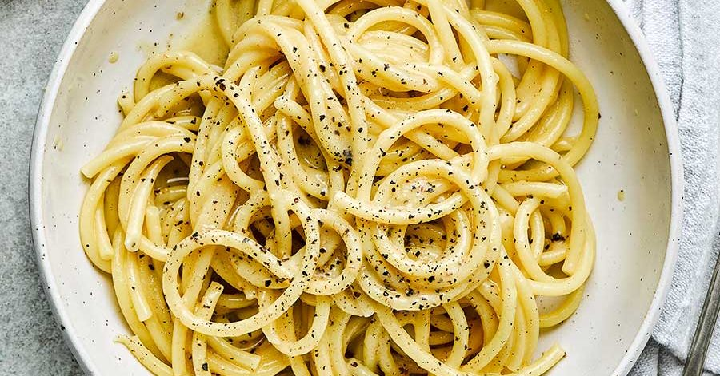

Spaghetti cacio e pepe
Un caposaldo della tradizione
Questa è una delle frasi tipiche che introducono i menù nelle trattorie o fraschette romane.
Ma la Carbonara e l'amatriciana, come gli spaghetti cacio e pepe, sono diventati oramai piatti simbolo dell'italianità, realizzati con ingredienti DOP legati alle tradizioni dei territori in cui sono nate. Un'eccellenza che dalle "tovaglie a quadretti" arriva nelle cucine dei grandi Chef, come nel caso degli spaghetti cacio, pepe e ricci di mare.
Anche noi vogliamo rendere omaggio ad uno dei simboli del mangiar bene e genuino, mostrandovi come eseguire una perfetta cacio e pepe!
La combinazione chimica di acqua e proteine del Pecorino, fondamentale per ottenere una crema senza grumi, i grani di pepe interi schiacciati al momento e tostati in padella per sprigionare tutto il loro profumo pungente, la pasta mantecata lentamente per assorbire tutto il sapore del Pecorino romano… e soprattutto, preparare e gustare: un'altra regola per assaporare al meglio gli spaghetti cacio e pepe!
Ingredienti
- Spaghetti 320 g
- Pepe nero in grani 5 g
- Pecorino romano 200 g
Preparazione
- Per preparare gli spaghetti cacio e pepe per prima cosa mettete sul fuoco una pentola con l’acqua per cuocere la pasta: riempitela con circa metà dell’acqua che usate di solito, in questo modo sarà più ricca di amido. Nel frattempo grattugiate il Pecorino romano.
- Quando l’acqua sarà arrivata a bollore, salate moderatamente e tuffate gli spaghetti.
- ntanto pestate i grani di pepe con un batticarne (oppure usate un macinino lasciandolo piuttosto lento in modo da avere anche pezzetti più grandi di pepe).
- Versate il pepe in un’ampia padella antiaderente e tostatelo a fuoco dolce, mescolando con un mestolo di legno. Sfumate con un paio di mestoli dell’acqua di cottura della pasta. Continuate a mescolare a fuoco dolce.
- Scolate gli spaghetti 2-3 minuti prima rispetto al tempo indicato sulla confezione e trasferiteli nella padella, avendo cura di conservare l’acqua di cottura. Terminate la cottura degli spaghetti in padella, risottandoli, aggiungendo quindi acqua calda al bisogno e rimestando continuamente con le pinze. Aspettate che il fondo della padella sia quasi asciutto prima di aggiungere altra acqua.
- Potete preparare la crema di Pecorino (non iniziate prima perché tenderebbe a rapprendersi o a risultare troppo fredda rispetto alla temperatura della pasta): versate un mestolo di acqua di cottura calda nella ciotola con il Pecorino grattugiato, poi mescolate energicamente con una frusta a mano. La consistenza che dovrete ottenere è più pastosa che cremosa, non preoccupatevi se sarà molto asciutta. Qualora una volta pronta la crema la pasta non dovesse essere pronta per la mantecatura, ponete brevemente la ciotola sulla pentola con l’acqua calda continuando a mescolare con la frusta, così da avere la crema a una temperatura simile a quella della pasta.
- Quando gli spaghetti saranno giunti a cottura, spegnete il fuoco e unite la crema di Pecorino, rimestando di continuo con le pinze. Per la cremosità ideale regolatevi aggiungendo più Pecorino oppure poca acqua di cottura al bisogno. Servite i vostri spaghetti cacio e pepe spolverizzando con il restante Pecorino grattugiato e altro pepe macinato al momento a piacere!